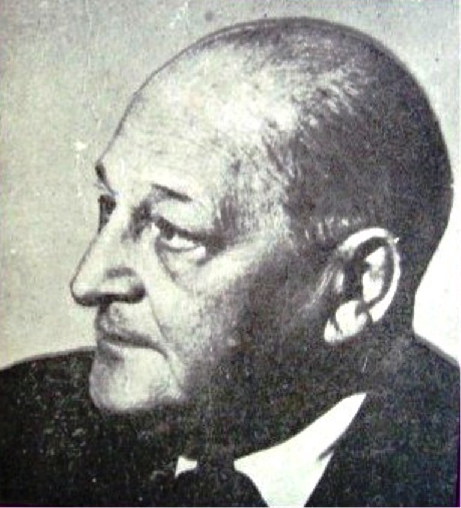

-> Mediul din care provine personalitatea;
-> Studiile, anii de formare;
-> Cercul de prieteni;
-> Debutul(literar,artistic, etc.) și afirmarea;
-> Activitatea ulterioară;
-> Mărturiile și amintirile contemporanilor despre acesta;
-> Viziunile, ideile pe care le-a promovat;
-> Specificul operei;
-> Artistul în viziunea posterității;